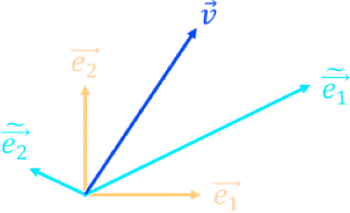
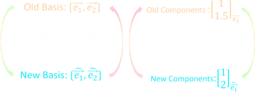

Coordinate transformation
Let two rectangular coordinate systems be given on a plane. The first system is defined by the origin O and the basis vectors i and j. The second system is respectively determined by the origin O' and the basis vectors i' and j'.
An arbitrary point M has coordinates x and y in the first coordinate system. In the second coordinate system, the same point M has coordinates x' and y'. Express the coordinates x and y in terms of x' and y'. We have
OM = xi + yj, O'M = x'i' + y'j'
Let point O' have coordinates x0, y0 with respect to the first coordinate system. Then
OO' = x0i + y0j
Any vector on the plane can be expanded in terms of the basis i,j. Therefore, there are numbers α11, α12, α21 and α22 such that
i' = α11 i + α12 j, j' = α21 i + α22 j
By the vector addition rule,
OM = OO' + O'M
Hence
xi + y j = x0 i + y0 j + x' (α11 i + α12 j) + y' (α21 i + α22 j)
or
x = x0 + α11x' + α21y'
y = y0 + α12x' + α22y'
Assuming that the shortest turn from the unit vector i to the vector i' occurs counterclockwise, let's express the numbers α11, α12, α21, α22 in terms of the angle φ between these vectors. Multiply the equality i' = α11i + α12 j by vector i:
i' = α11 i + α12 j,
i' ⋅ i = α11 i ⋅ i + α12 j ⋅ i}, ⇒ cos φ = α11 ⋅ 1 + α12 ⋅ 0, ⇒ α11 = cos φ
Now we multiply the same equation by vector j:
i' = α11 i + α12j,
i' ⋅ j = α11 i ⋅ j + α12 j ⋅ j,
cos (π/2 - φ) = α11 ⋅ 0 + α12 ⋅ 1, ⇒ α12 = sin φ
Performing the same operations with the second equation j' = α21 i + α22 j, we find
α21 = -sin φ, α22 = cos φ
So we get the following coordinate transformation formulas:
x = x0 + x' cos φ - y' sin φ
y = y0 + x' sin φ + y' cos φ
It is convenient to write this system in matrix form:
x = x0 + x' cos φ - y' sin φ
y = y0 + x' cos φ - y' cos φ
The general transformation of coordinates consists of two transformations, one of which corresponds only to parallel translation of the system and the other only to the rotation of the system around the origin by an angle φ.
In the special case when φ = 0, we are dealing only with parallel translation:
In the case of pure rotation, the coordinate transformation is described by the rotation matrix:
Example. Consider two coordinate systems represented by the following two bases
Old Basis : {e1, e2}
New Basis : {ẽ1, ẽ2}
Such that
ẽ1 = 2e1 + 1 ⋅ e2
ẽ2 = −1/2⋅ e1 + 1/4 ⋅ e2
which can be expressed in matrix form as
To construct the old basis from the new basis we invert the matrix
we can generalize to n dimension and write
And for the backward transformation
Vector components
A vector, v is invariant under change of coordinates so it ca been written equally as
By replacing Eq. 8.1.1 in the first of the above equation we get
so the components of v, in the two basis transform as
Because vector components behave contrary to the basis vectors, we say vector components are contravariant. We'll see that vectors are contravariant tensors. We usually represent them as follows
which is sort of a reminder that they behave in opposite ways